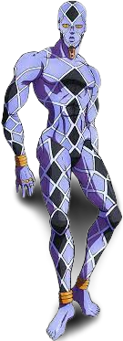
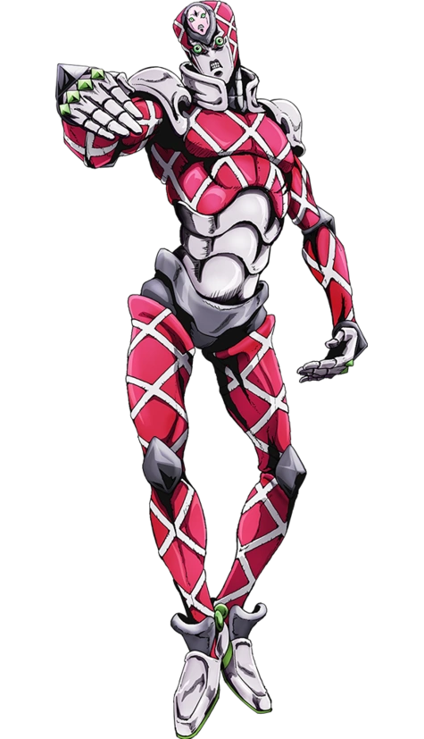
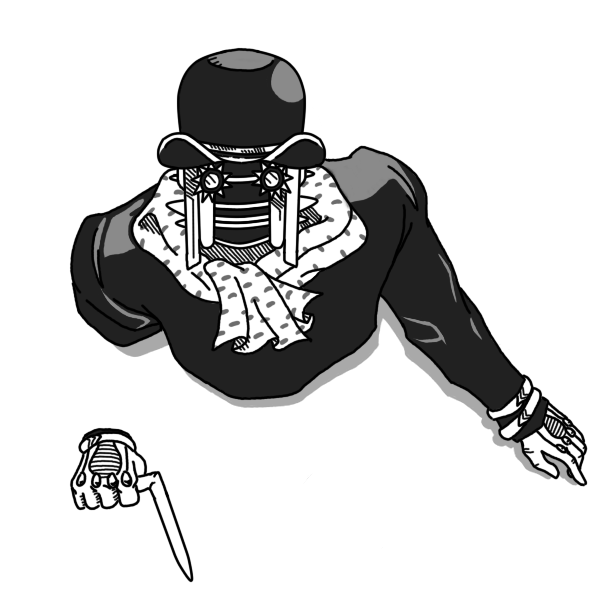
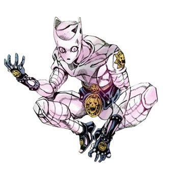
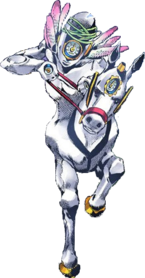

-
Highway Star
Parte: 4
Status: A B A A E C
Highway Star se manifesta como um humanóide roxo de aparência nua, com um padrão xadrez pelo corpo. Quando está perseguindo um alvo, Highway Star assume a forma de várias pegadas. Não possui personalidade própria. Highway Star pode agir tanto automaticamente quanto ser controlado por seu usuário diretamente.
-
King Crimson
Parte 5
Status: A A E E ? ?
King Crimson é uma Stand humanóide e Seu corpo é coberto por uma rede diagonal em relevo, com uma roupa vermelho por baixo; com exceções em sua face, pescoço, ombros, cotovelos, mãos, abdômen, virilha, joelhos e pés. a partir de sua testa emergem dois níveis elevados, a qual a da frente possui um rosto oval e pequeno, com a mesma expressão de sua face original que é chamado de "Epitaph".
-
Wonder Of U
Parte 8
Status: ? ? ? ? ? ?
Wonder of U tem duas formas, sua forma de stand principal e seu disfarce de Satoru Akefu, o médico chefe da TG University. Como Satoru, Wonder of U aparece como um homem de 89 anos, curvado e andando com uma bengala. Ele usa um chapéu-coco preto e casaco, luvas e um lenço. Em sua forma de stand, Wonder of U fica de pé e o rosto humano de Akefu é substituído por uma cabeça mecânica que se assemelha a um microfone de rádio. Seus olhos têm a forma de sóis, semelhantes aos botões do casaco. Por baixo da roupa, Wonder of U tem um corpo mecânico esguio e articulado com um par de lâminas nos braços.
Calamidade: A principal habilidade de Wonder of U gira em torno do conceito de 'Calamidade', trazendo desgraça iminente para qualquer um que persiga Tooru ou Akefu (a forma 'humana' de Stand). -
Killer Queen
Parte 4
Status: A B D B B A
Killer Queen é uma Stand humanóide de curto alcance com uma velocidade mediana a acima da media e grande força física. Sua habilidade especial envolve plantar ou utilizar três tipos de bombas, geralmente capazes de consumir seus alvos completamente; embora suas explosões não sejam perigosas para mais de um alvo, nem perceptíveis para não-usuários de Stand. O principal defeito dessa habilidade é que só uma bomba pode ser ativada por vez (e só uma de cada tipo de bomba).
-
Made In Heaven
Parte 6
Status: B ∞ C A C B
é a terceira e ultima evolução de Whitesnake de Enrico Pucci, possui um design muito diferente de suas formas anteriores, tendo como a parte inferior de seu corpo a metade de um cavalo e a parte de cima metade de um corpo humanóide que segura as rédeas, possui uma estranha plumagem em volta de seu pescoço e possui diversos relógios em diferentes partes do corpo, sendo o mais notável aquele que possui no meio do seu rosto. Não possui personalidade.
Aceleração Temporal: Stairway to Heaven possui o poder de manipular as forças gravitacionais da terra, lua e possivelmente de todo o universo para acelerar o tempo exponencialmente, impedindo que nenhum ser vivo possa acompanhá-lo a não ser seu usuário e teoricamente Deus, desta forma, Pucci parece estar se movendo em alta velocidades mas na verdade ele está sincronizado com o tempo acelerado, e do seu ponto de vista os outros parecem estar em câmera lenta. Apesar do stand não ser forte sua velocidade extrema é suficiente para matar pessoas facilmente, contudo, Pucci não é invulnerável, podendo ser ferido durante a aceleração, e a aceleração também não faz com que suas feridas se curem de maneira mais rápida.
Reset Universal: Conforme a velocidade do tempo aumenta, o universo chega em um ponto de colapso no qual o universo se condensa e depois se recria de forma igual ao anterior conforme o "destino" pré-determinado, porém, os espíritos das pessoas continuarão guardando memórias inconsientes do universo anterior, assim segundo Pucci, haveria o verdadeiro paraíso pois a humanidade poderia encarar o destino sabendo deste previamente, além disto, o usuário é o único que pode modificar o destino, assim ele pode "moldar" o destino a seu modo e sendo assim, qualquer pessoa ou ser vivo morto por Pucci no universo anterior tem seu espiríto "destruído" e trocado com o de uma pessoa similar (apesar dos exemplos dados mostrarem que a versão modificada parece mais uma caricatura do original). Apesar deste controle, Pucci não é capaz de determinar como sua ações vão mudar o destino de outras pessoas, o que o levou a sua derrota. Quando o usuário morre antes do ponto aonde a aceleração anterior teria começado, como consequência ocorre um novo reset e é criado um novo universo aonde os acontecimentos divergem do anterior, possivelmente anulando aos acontecimentos que levariam a própria criação do stand.